Algumas pessoas entram na nossa vida e mudam tudo.
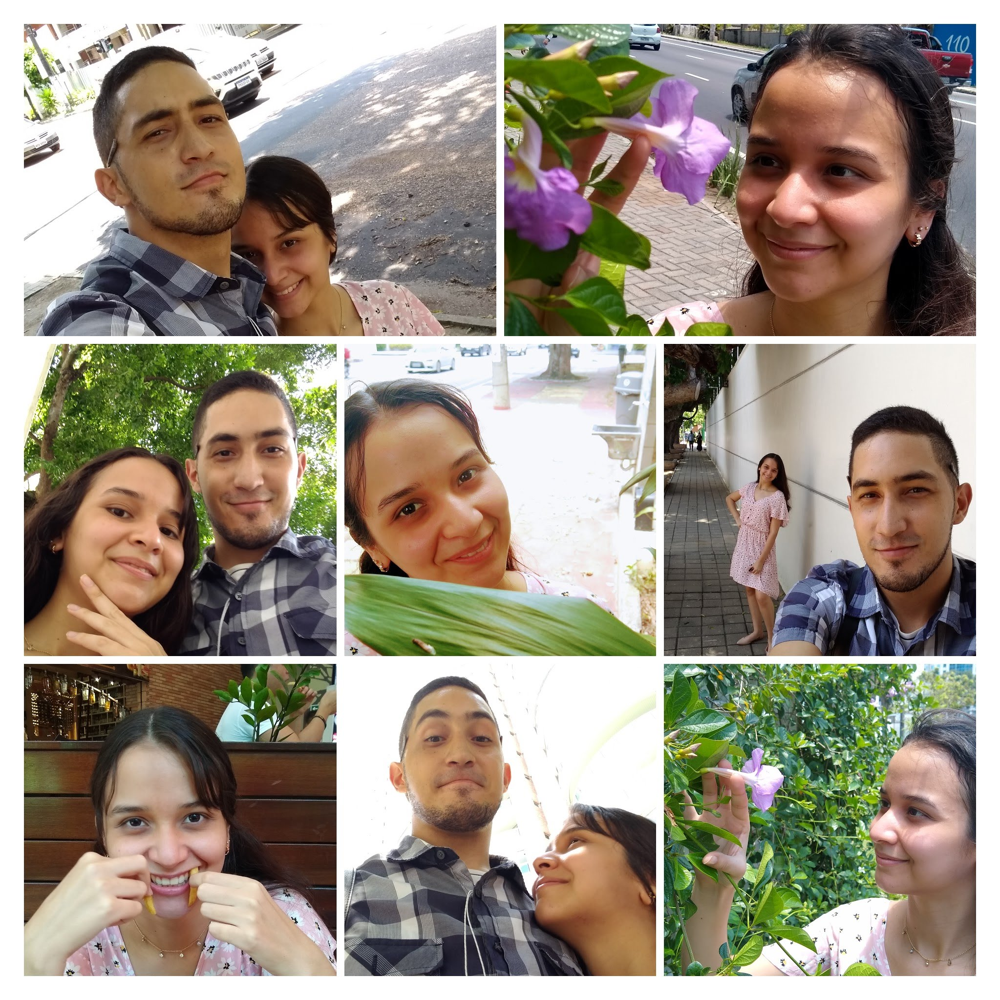
Desde que você entrou na minha vida, meus dias ficaram mais leves.
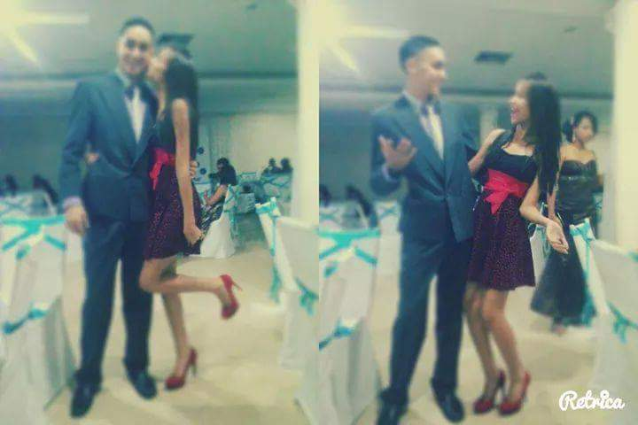
O dia em que tudo começou.Não é exatamente a primeira foto, más é significativa
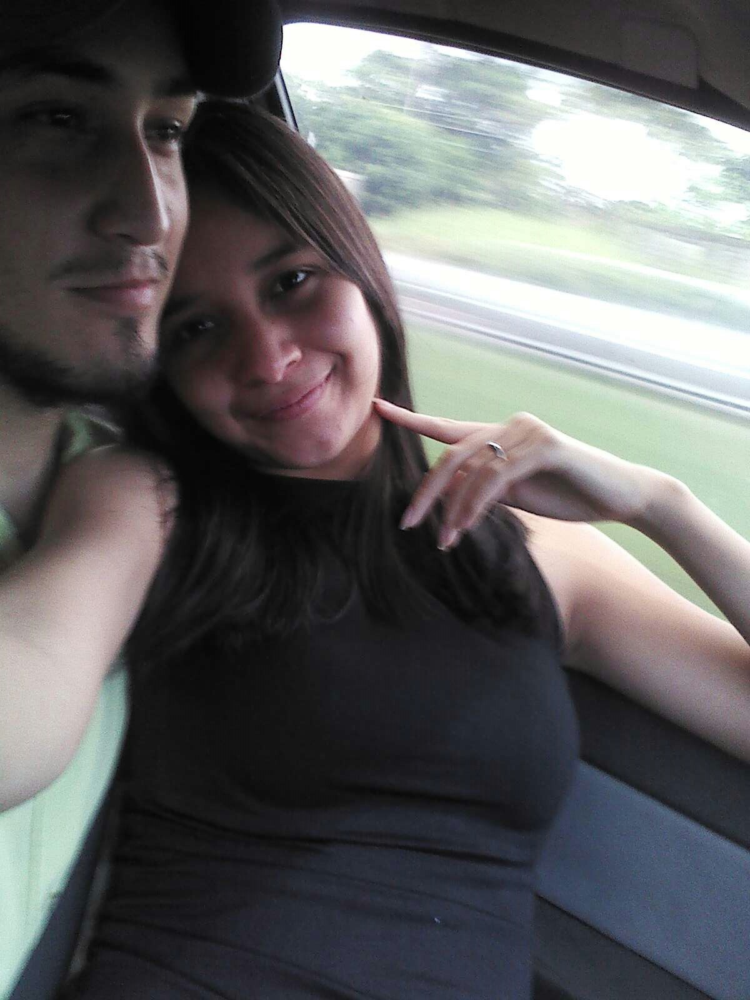
Uma lembrança que sempre vou guardar.
Risos, conversas e memórias.
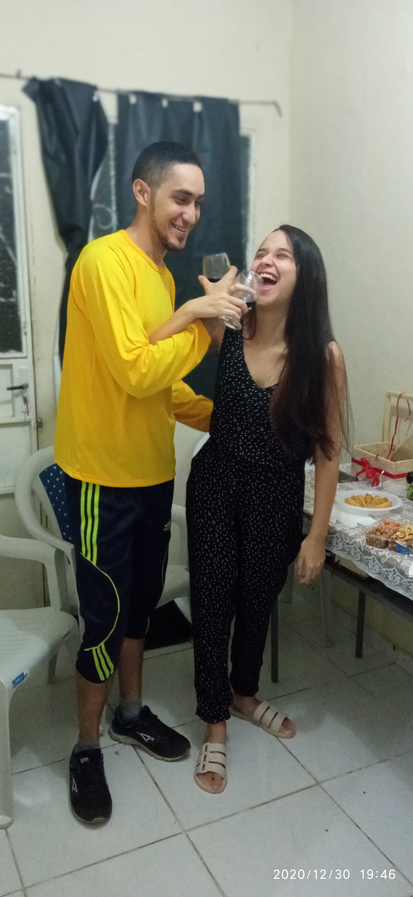
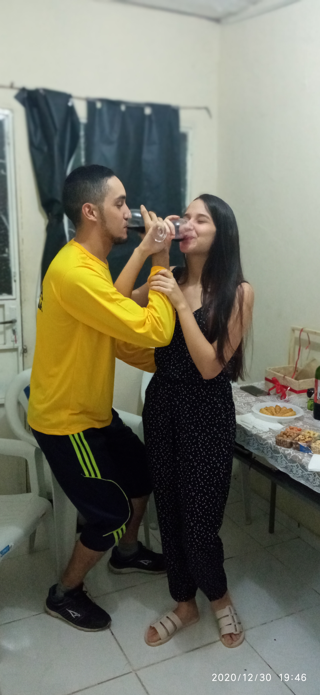
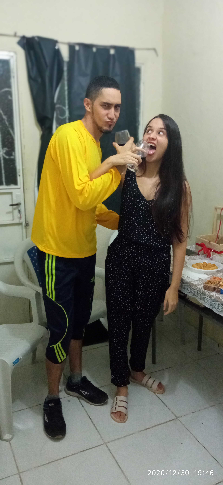
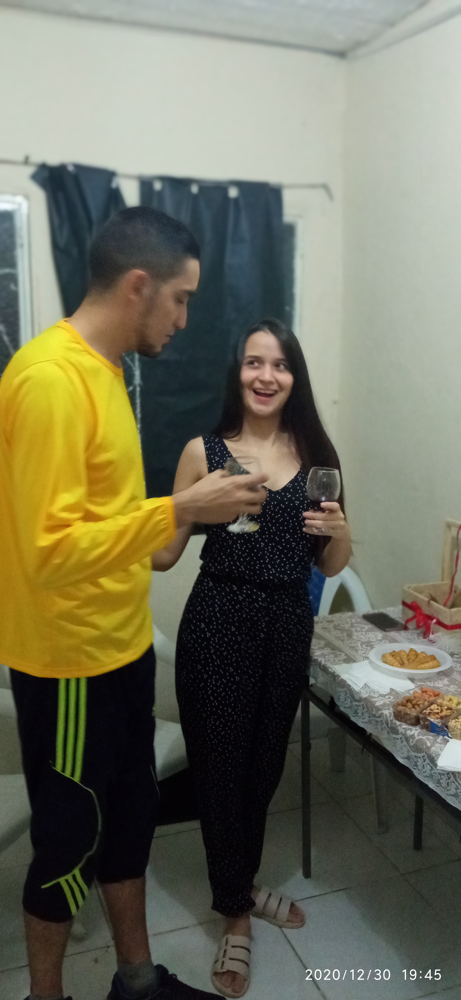
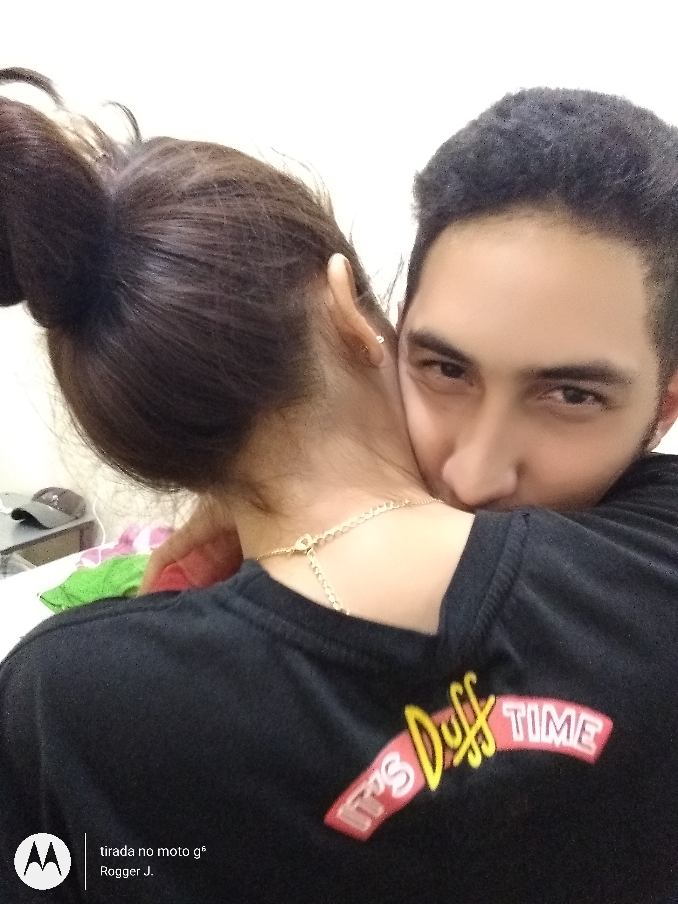
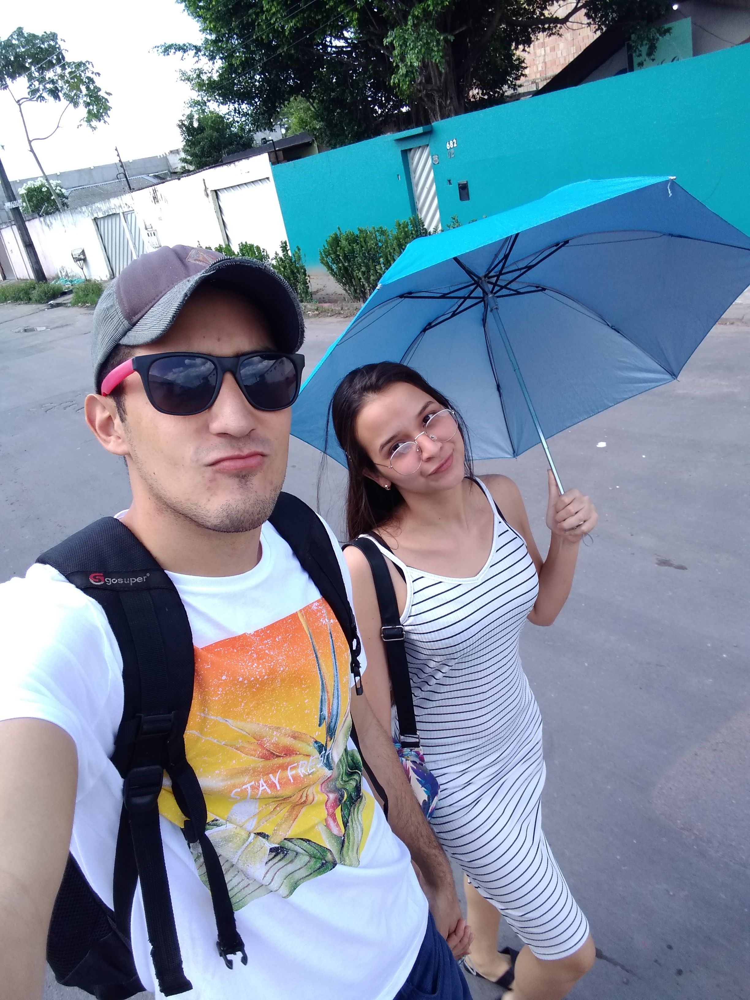
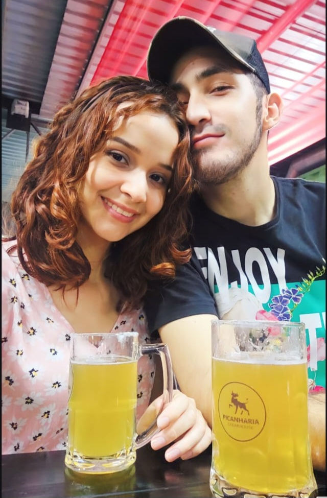
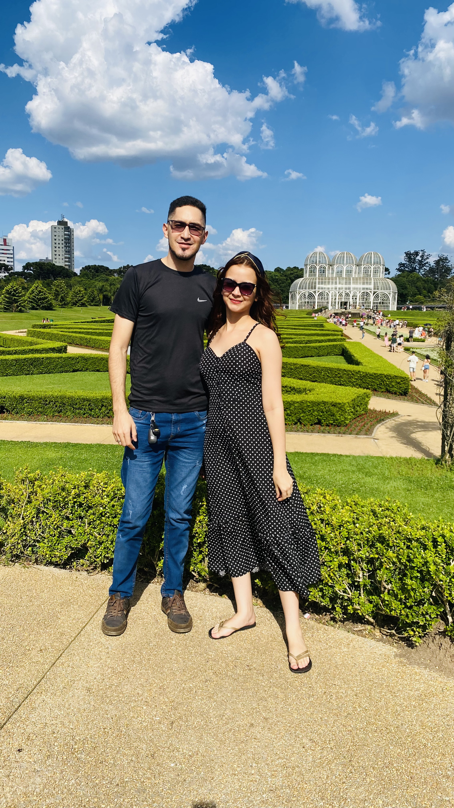
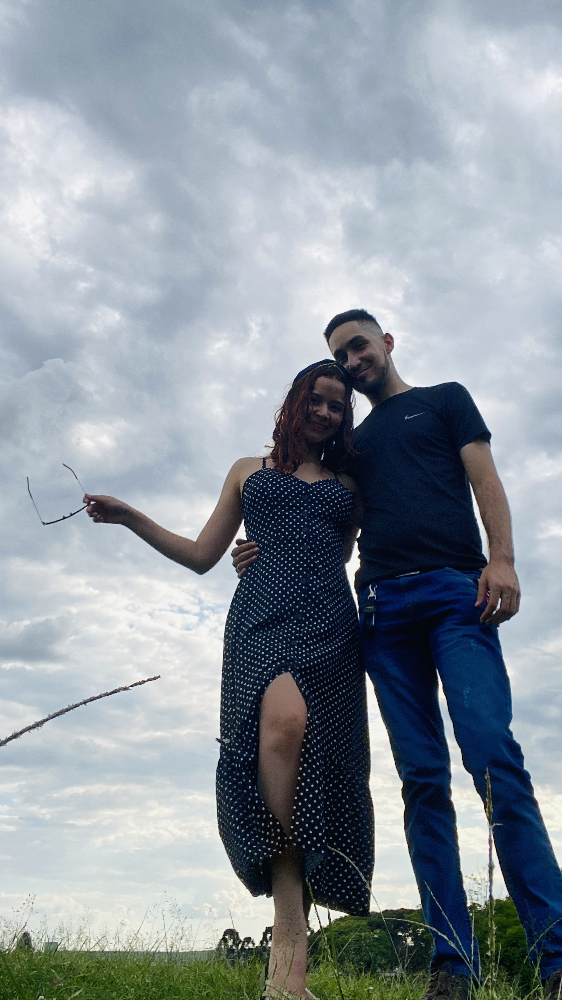
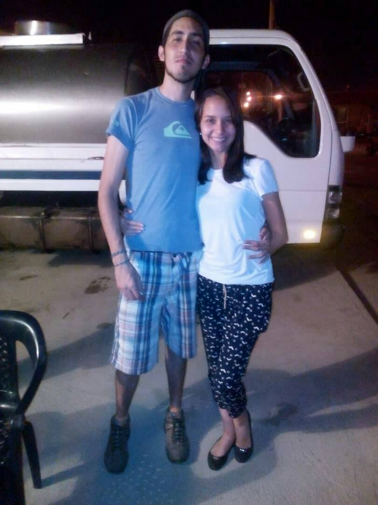
Nem todos os dias são perfeitos, mas alguns momentos fazem tudo valer a pena.
Você e eu podemos uma historia para sempre
02/04/2026 - Hoje começo a escrever aqui, como um pequeno diário. Talvez pra organizar meus pensamentos, talvez só pra não deixar certos sentimentos se perderem com o tempo. Nem tudo é simples de entender, mas escrever talvez ajude a dar sentido às coisas. sem muita certeza de onde isso vai dar. Só sei que algumas histórias merecem ser registradas, de um jeito ou de outro.